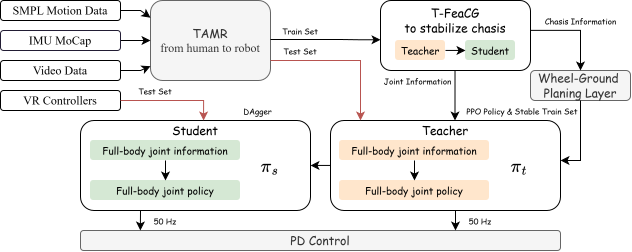

VIDEO DEMONSTRATIONS
Morphology-Aware Human Motion Retargeting for Wheeled-Humanoid Loco-Manipulation
Harbin Institute of Technology
Qualitative results for topology-adaptive retargeting and temporal feasibility-aware base control.

1 / TAMR
Retargeted results
Twenty motion sequences after topology-adaptive motion retargeting.
2 / T-FEACG + PPO
Temporal feasibility-aware control
Comparison of the PPO policy with and without T-FeaCG.